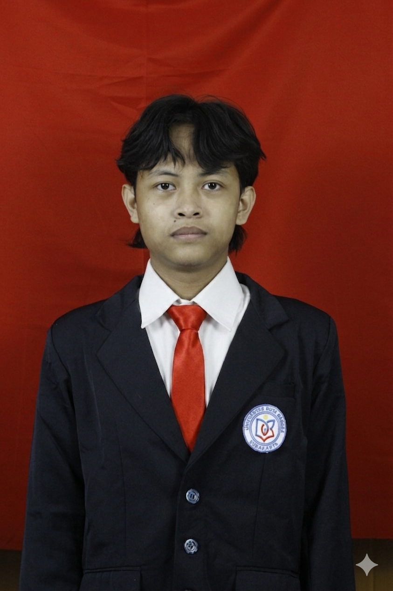

Mahasiswa D3 Teknik Komputer yang memiliki keahlian dalam administrasi jaringan, dasar pemrograman perangkat keras (IoT), serta kemampuan manajemen aset media digital untuk kebutuhan operasional IT perusahaan.

Kompetensi teknis lapangan dan dokumentasi yang saya miliki
Mempelajari teori dasar jaringan komputer, pengenalan perangkat keras jaringan (Switch/Router), serta praktik dasar pembuatan dan penataan kabel LAN.
Memahami dasar-dasar wireless network, manajemen frekuensi, konfigurasi access point, serta implementasi enkripsi keamanan nirkabel.
Bisa mengakses Canva untuk membantu pembuatan visualisasi laporan teknis kuliah, diagram alur, poster informasi, dan materi presentasi agar lebih rapi.
Dokumentasi pengalaman praktis pengerjaan proyek IT (Semester 1-2)
Merancang dan membangun alat pendeteksi kualitas kebusukan telur berbasis Arduino menggunakan sensor LDR untuk membaca intensitas tingkat gelap/terangnya cahaya pada telur secara otomatis.
Membangun infrastruktur Virtual Private Network (VPN) Mesh untuk menghubungkan konektivitas data dan komunikasi jarak jauh antar perangkat secara terenkripsi menggunakan ZeroTier One.
Mengembangkan perangkat lunak penguji keamanan jaringan dan deteksi celah kerentanan web dari serangan clickjacking berbasis Python (Flask Framework) dan kontainerisasi Docker.
Praktik konfigurasi Access Point, implementasi protokol keamanan nirkabel (WPA2/WPA3), serta optimalisasi distribusi sinyal dalam jaringan lokal.
Mengonfigurasi topologi jaringan komputer dasar korporat, routing statis, switching, alokasi VLAN, dan manajemen subnetting IP Address dengan Cisco Packet Tracer.
Bisa mengakses Canva untuk menyusun dan membuat visualisasi laporan tugas perkuliahan, infografis alur sistem jaringan, serta tata letak presentasi data.
Saya sangat terbuka untuk kesempatan magang, proyek IT, atau diskusi seputar perkembangan teknologi komputer.